プレビューを取得できませんでしたサイトを開く ↗
歴史マップ
竹田圭冴 taketa keigo
https://www.oldmapsonline.org/
これは、国や人々の動きを追えるマップです。
誰が何年の時にどれくらい支配していたかや、ここではこういう争いなどがあったなど書いてあり、非常に面白いと思いました。
高校や中学の授業に使えそうですね
プレビューを取得できませんでしたサイトを開く ↗
大島てる
神戸宗一郎
https://www.oshimaland.co.jp
事故物件を地図で見ることができる。事故物件に住みたくない人におすすめ
死因を見ることができる
誰が投稿しているのかわからない。真実の情報か要踏査しなければならない
着眼点に惹かれた
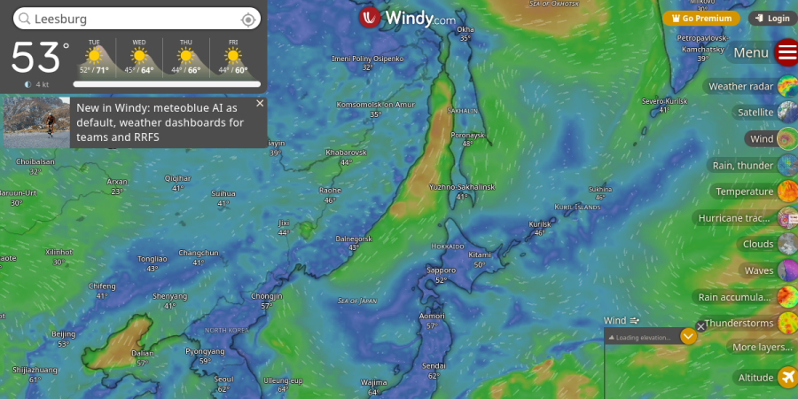
サイトを開く ↗
世界のリアルタイム気象アニメーション
吉田 爽二 Yoshida Soji
https://www.windy.com/?36.536,138.892,5,m:eEIakoH
風や気圧の流れがアニメーションで動いて見れて、50以上のレイヤーを切り替えて表示でき、地図上のどこでもクリックするとその地点の詳細予報が出るところが操作が直感的でわかりやすい点がいいと思いました。
情報量が多すぎて、初見だとどのレイヤーを見ればよいか迷う点が改善できぞうだと考えました。
「データを色と動きで表現する」手法は地図に限らず参考になると思いました。
 サイトを開く ↗
サイトを開く ↗
RESAS
Shun Onitsuka 鬼塚駿
サイトのトップページにリンク
RESASの宿泊者分析マップは、観光客の宿泊状況を都道府県ごとに色分けして分かりやすく可視化しており、地域ごとの違いや特徴を直感的に把握できる点が良いと感じた。また、年度変更やヒートマップ表示など操作も簡単で使いやすく、自分のWebマップ制作でも、色やデータの見せ方を工夫して情報を分かりやすく伝えることの大切さを学ぶ参考になった。
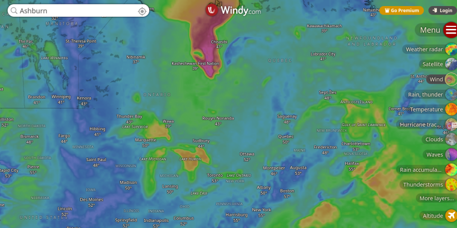
サイトを開く ↗
地球の「今」を可視化するマップ
森本颯太 Souta Morimoto
サイトのトップページにリンク
リンク：Windy.com
良いと思った点
「風」という目に見えないものを、流体シミュレーションのようなパーティクル（粒子）で表現している点。色の階調（ヒートマップ）と動きの速さで、直感的に危険度がわかる。
改善できそうな点や気づいたこと
ブラウザ上で高度なレンダリングを行うため、古いPCやスマートフォンでは動作が重くなることがある。
リンク未提出
Website link not provided
懸垂のできる公園マップ
Hibiki Tsuchiya
この地図は、公園にある懸垂バーなどの運動器具を探し、屋外でトレーニングしたい人のための地図である。特に、部活動やスポーツをしている人、筋力トレーニングを日常的に行いたい人に向いており、ジムに行かなくても身近な場所で体を鍛えたい人にとって便利なツールだと感じた。自分自身も外出している時懸垂したくなることがよくありこのマップにお世話になっている。
良いと思った点は、地図上で場所が視覚的に分かりやすく、検索するだけで候補が表示されるため操作が簡単なことである。また、地図だけでなく写真や口コミなどの情報も確認できるため、初めて行く場所でも安心して利用できる点が便利だと感じた。
改善できそうな点としては、公園ごとの懸垂器具の種類や数がもう少し詳しく分かるとさらに使いやすくなることや、「トレーニング向け」「初心者向け」などの分類があると選びやすくなると感じた。
この地図のように情報を分かりやすく整理する方法は、自分のサッカー活動にも活かせると思った。例えば自主トレに適した場所をまとめることで、同じようにスポーツをしている人に役立つ情報を発信できると考えた。
 サイトを開く ↗
サイトを開く ↗
気になるWEB地図
Meven Steeve Perera
サイトのトップページにリンク
この地図は、世界の天気（風、雨、気温、台風など）をリアルタイムで可視化するためのインタラクティブ地図です。パイロットや船の関係者、登山者、旅行者などが主に利用していますが、一般の人でも天気の変化を理解するために役立ちます。
良いと思った点は、風や雲の動きがアニメーションで表示されるため、視覚的にとても分かりやすいところです。また、雨・気温・気圧などの情報をレイヤーで切り替えられるので、多くの情報を一つの地図で見ることができます。
改善できそうな点は、情報量が多いため最初は少し分かりにくいことと、専門用語が初心者には少し難しいことです。また、スマートフォンでは少し動作が重く感じる場合があります。
この地図から学べることは、データを数値だけでなく「動き」として表現すると、より直感的に理解できるという点です。自分のプロジェクトでも、分かりやすい視覚化を意識したいと思いました。
サイトを開く ↗
RESAS
Kyou Asakura 朝倉 響
https://resas.go.jp/?utm_source=chatgpt.com
魅力は、人口や産業、観光などの地域データを地図で分かりやすく可視化できる点です。地域ごとの特徴や違いを直感的に比較でき、なぜこの地域は発展しているのかと考えるきっかけになります。また、公的データを使っているため信頼性が高く、GISや授業の分析にも活用しやすいことが大きな魅力です。
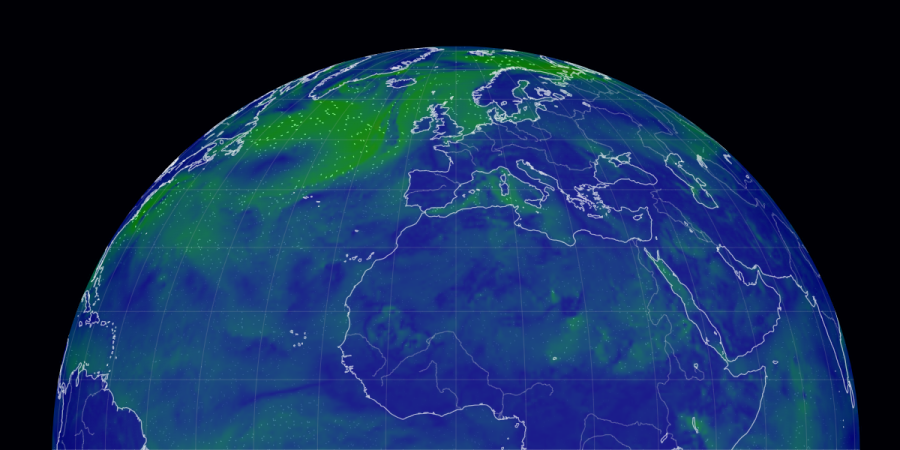
サイトを開く ↗
nullschool
桃井 優 Momoi Yu
サイトのトップページにリンク
どんな地図？
世界中の気象状況（風、気温、降水量など）をリアルタイムで可視化したインタラクティブ・マップです。流れるようなアニメーションで「今、地球のどこで風が強く吹いているか」が一目でわかります。
ここがおもしろい・役立つ！
• 圧倒的な没入感： 地球儀をくるくると回しながら、台風の渦や偏西風の流れを眺めているだけで時間が溶けます。もはやアート作品のようです。
• 高度なデータ切り替え： 地上付近の風だけでなく、上空の気流、海流、さらにはオーロラの予測や大気汚染物質（PM2.5など）の動きまで表示可能です。
• 実用性： 台風が近づいている時、ニュースの解説よりも「自分の目で」勢力や進路を直感的に理解するのに役立ちます。
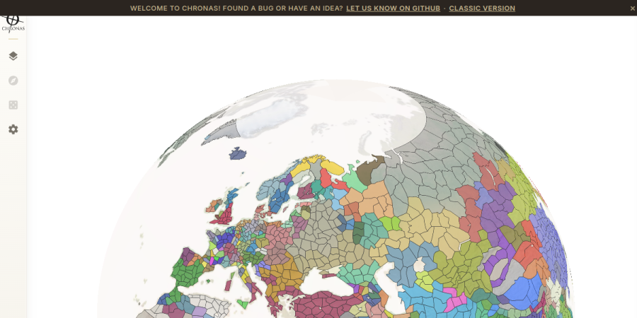
サイトを開く ↗
歴史マップ
Akira Arai 荒井聡
目的：その時代にどの国が統治していたかが一目でわかる
良いと思う点：スライドで年を変えれて人のアイコンをクリックすればその当時の国のリーダーなどが詳しく見れるウィキペディアに飛べるから詳しく歴史を知ることができる。
気づいたこと：色分けされていて見やすい、年代を変えたあとすぐ反映されるから待ち時間が少ない。
自分のプロジェクトでの参考点：ウィキペディアなどとつなげることで情報を詳しく知らせることができるところを参考にしたい。
リンク未提出
Website link not provided
イオンフロアマップ
坂本 快 sakamoto kai
目的：入店者がはじめて利用する店舗でも迷わずたどり着けるように案内する。
良いと思う点：ファッションは緑、グッズは青とジャンルごとに色分けされているため、なんとなく欲しいものが思いついていない人でもジャンルから探すことができる。マップ上の数字は別である店舗一覧と連動していて、先に店舗一覧を見てから行きたいお店を数字から探すことができる。
気づいたこと：大きめのチェーン店等はロゴも載せられている。有名なチェーン店に行きたい人がすぐに見つけられるようにするための工夫と見られる。
自分が参考にできそうなこと：ゲームの自作プロジェクトを立てると仮定して、マップを作るときにショップやステージなど施設のジャンルごとに色分けや専用のマークをつけたり、ジャンルや設定した数字、名前等から検索してボタン一つで迎えるようにしたら快適にできると考える。
リンク未提出
Website link not provided
世界遺産マップ
Shion Ogawa 小川 史温
目的：世界中のあらゆる世界遺産を24時間表示することができ、場所や数が確認することができる。世界遺産や旅行者に興味もっている人にとって役に立つマップである。
良いところ：このマップには左の検索ツールに年代や日付、キーワードなどを入力すると特定な場所を絞り込みことが可能であり、扱いやすい仕様となっている。また、色によってどの種類の世界遺産なのか色別にわかりやすく表示されている。
改善できそうな点や気づいたこと：色がついている世界遺産をタッチすると実際に地名とその概要が記載されており、さらにタップすると地形まで表示することに気づいた。
世界遺産が多い国や地域だと色が重なっていて見ずらいのでマップそのものを大陸別でそれぞれに分けた方がよいと思った。
自分のプロジェクトのヒントになりそうなところ：色別でどこに何があるのかを見つけやすいマップにしてみたいと考えた。
プレビューを取得できませんでしたサイトを開く ↗
https://www.flightradar24.com/35.57,138.64/8
八重樫旺樹（Yaegashi hiroki)
この地図は飛行機の位置やルートをリアルタイムで見られるもので、旅行者や航空に興味ある人向けだと思う。アイコン表示で直感的に分かりやすく、操作もしやすいのが良い。ただ、情報が多くて少し見づらいところもある。自分は世界の危険度マップを作る予定なので、色分けやアイコンで一目で分かる工夫や、表示を切り替えられる点は参考にしたいと思った。
リンク未提出
Website link not provided
ラーメン百名店
Taiyo Sato佐藤太陽
この地図は、食べログの「ラーメン百名店」に選ばれた店舗を東京周辺にまとめたものです。評価の高い店がどのエリアに集中しているかが一目で分かり、激戦区の分布を理解できます。色分けや数字で評価が示されているため、人気度も直感的に把握しやすい点が良いです。また、地図上に密集して表示されることで、都心部に店が集中していることも視覚的に分かります。一方で、情報量が多く少し見づらい部分もあるため、ジャンルごとの色分けや拡大時の整理があるとさらに使いやすくなると感じました。
リンク未提出
Website link not provided
事故が多い道路
Yu kawai 川合悠
事故が多い道路の地図は、危険な場所を直感的に見られるのが面白いと思いました。通学や運転の安全確認に役立ちそうで、実用性が高いです。写真では、麗澤大学周辺を調べました。その結果６号道路が危険だとわかりました。色分けや密度表示でわかりやすい一方、最初は凡例や使い方の説明がもっとあると見やすくなりそうです。自分のプロジェクトでも、場所だけでなく原因や対策まで地図に入れると、より伝わりやすいと感じました。
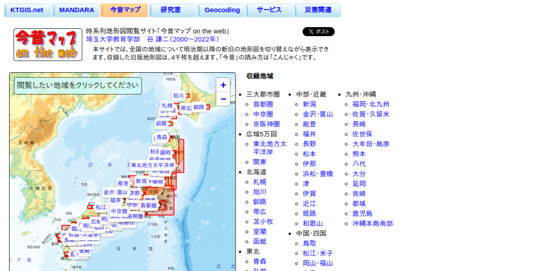
サイトを開く ↗
今昔マップ！
江口歩真
サイトのトップページにリンク
この地図が今のマップと昔のマップを比べるwebで、地域の歴史を調べたい住民、都市計画の研究者、またはブラタモリのような街歩きが好きな人のために作られています。特に優れていると感じたのは、左右の地図が完全に同期するところです。片方の地図を動かすともう一方も同じ地点を追従するため、位置を合わせ直す手間がありません。「昔はここが川だったんだ」という発見ができる、非常に優れた機能だと思います。。改善できそうなところが、昔の地図が見ずらいのでもっと見やすく出きたらいいなぁという点です。ただ自分のプロジェクトのヒントになりそうなところは考えれなかったので考えていきたいところが一つの課題です。
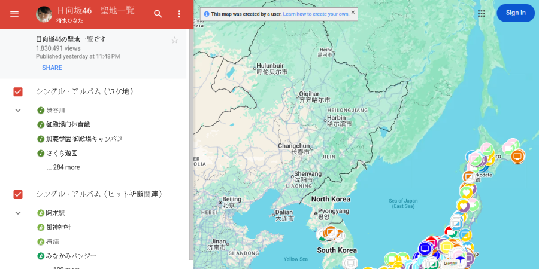
サイトを開く ↗
日向坂46聖地マップ
Syunsuke Okano 岡野俊介
https://www.google.com/maps/d/u/0/viewer?mid=14Otcijw10dc-Fyu1P-q-BygLgiLK2sQ&ll=34.72305828105682%2C131.02878306570975&z=5
この地図は、日本全国、周辺国にある特定の観光地や施設、イベント会場などの位置情報を、清水ひなたさんによってオリジナルのピンを使って網羅的にまとめたデータベースマップで、Googleマイマップの機能を活用して作られており、特定のジャンルや趣味のスポットを効率よく巡りたい旅行者や、各地の拠点を一目で把握したいファンのために作成されています。
もっとも優れている点は、ピンの色やアイコンの形状（カメラ、買い物袋、星など）をジャンルごとに細かくデザイン分けしているところです。これにより、膨大なデータがありながらもどこに、どんな種類のスポットがあるのかが直感的に伝わります。また、使い慣れたGoogleマップがベースになっているため、広域表示から詳細表示までの拡大・縮小が非常にスムーズで、誰でも迷わず操作できる点が素晴らしいです。
一方で、これだけ多くの情報が全国規模でマッピングされていると、日本全体を表示した際にピン同士が重なり合ってしまい、画面が混雑して個々の情報が少し見づらくなっています。地図の縮尺に合わせてピンをまとめる機能や、必要なジャンルだけをワンクリックで絞り込める検索メニューがあると、さらに視認性が高まって使いやすくなると感じました。
この地図からは、アイコンの色や形を工夫することで、情報の属性を瞬時に識別させるデザインの重要性を学びました。今後、keplerなどを活用して大量の位置データを地図上にマッピングする際にも、情報が密集するエリアをどう見せるかを考える上で、非常に大きなヒントになりました。
プレビューを取得できませんでしたサイトを開く ↗
聖地マップ
Chiki Iwata 岩田知機
https://share.google/zsFEHsQulSpJ4aWxV
マップがなにに関する聖地なのかが分かりやすく分けれていてとても見やすかった。
また、最初の画面で聖地が何箇所あるのかも地域ごとで分けられており、自分に近い地域に聖地があるのか一目で分かって聖地巡りをしたい人にありがたいと思った。
改善できそうな点は最近メンバー個人のインスタが開設されたこともあり、メンバーそれぞれの聖地が増えることが予想されるため、どのメンバーの聖地なのかが分かるようにするとさらに良くなるのではないかと考えた。
プレビューを取得できませんでしたサイトを開く ↗
Flightradar24
Edwin Montella
サイトのトップページにリンク
この地図は、Flightradar24 を使って世界中の飛行機の位置をリアルタイムで確認できるインタラクティブな地図で、旅行者や航空に興味がある人にとって役立つ。地図上で飛行機が実際に動いているのが見えるため直感的に理解しやすく、クリックすると出発地や到着地などの詳細情報も確認できる点がとても便利だと思った。また、ズーム操作やシンプルなUIによって誰でも使いやすいが、一方で情報量が多く初心者には少し見にくい部分や専門用語が多い点は改善の余地があると感じた。この地図からは、リアルタイム表示やクリックによる詳細表示などのインタラクティブな要素がユーザーの興味を引くことが分かり、自分のプロジェクトでもシンプルで分かりやすい操作と視覚的に理解しやすいデザインを取り入れることが重要だと考えた。
プレビューを取得できませんでしたサイトを開く ↗
MarineTraffic
柴田 尚槻 Naoki Shibata
https://www.marinetraffic.com/en/ais/home/centerx:115.0/centery:19.8/zoom:2
このマップは世界中を航行する商船・客船などの位置情報をリアルタイムで表示するマップです。船名や海域で検索をすることができ、船舶の詳細や写真などを確認することができます。基本的なサービスは無料で利用することができ、有料会員になるとより高度な機能を利用することができます。
主に海運や物流関係の仕事に就いている人や船乗り、港湾関係者が使うことが多いようです。
良いと思った点の一つが船舶の色分けです。赤色がタンカー、ピンク色が遊覧船など、どの種類の船舶がどの海域を航行しているかが一目でわかるような色分けになっています。
また、基本的な操作は右側のパネルでできるため操作性も良いです。
気づいた点は、日本語が対応しきれていないことです。一部日本語対応はしていますが、大部分は翻訳されていません。今後様々な言語に対応させることで利用者はより増えていくと思います。
自分のプロジェクトのヒントになりそうな部分としては、パネルを使っての操作や色の使い分けです。どこに何があるかをわかりやすく配置することで操作性や視認性をよくすることができると思いました。
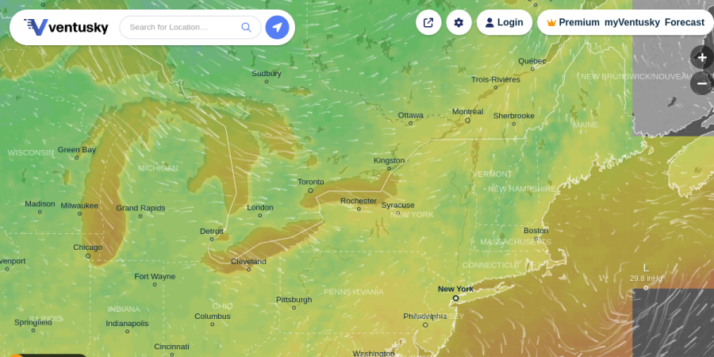
サイトを開く ↗
Custom Weather Map
Kazumichi Miura 三浦和道
https://www.ventusky.com/
This map allows you to view the weather data you want by selecting various options such as temperature, wind chill, precipitation and wind speed.
I prefer maps like this, where I can freely change the view, to those that only show a single fixed type of data, so I found it to be a very good map.
Furthermore, zooming in reveals place names, and I think it’s a great feature that all the specific town and city names are displayed.
As for areas for improvement, since precipitation data can only be viewed in three-hour intervals, I would like to see it available at least in one-hour intervals, if not down to the minute.
Seeing that this map contained as many as 14 customization options, it made me realize that when I create my own maps in the future, I want to include even the elements I don’t personally need as potential options, to create more versatile maps.
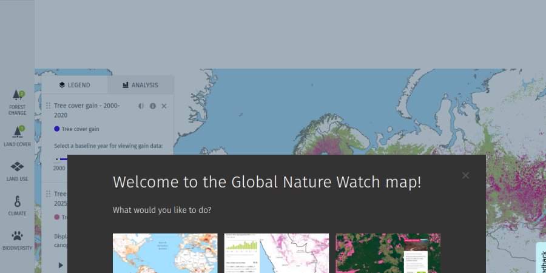
サイトを開く ↗
Global Forest Watch
Kuwakubo Youhei 桑久保陽平
URL:Interactive World Forest Map & Tree Cover Change Data | GFW
日本語には対応していないものの、日本を含む世界全体の森林状況をほぼリアルタイムで確認できる。過去のデータと現在のデータを簡単に比較できるため、今は昔と比べてどれだけ森林が減ったのか一目でわかる。
本マップは世界の森林伐採率調査などに用いられている。
スライダー形式で簡単に過去のデータと今のデータを切り替えできるため初めてでも使いやすく感じた。
改善してほしい点や使いづらさは特に感じなかったが、強いて挙げるなら、あまり多くの言語には対応していないのでもっと多くの言語に対応して、世界各国でより気軽に使えるようにしたらいいかもと思った。
これを使えば今後環境に関するマップを作るときに使いやすいデザインはどんなものであるかイメージができた。
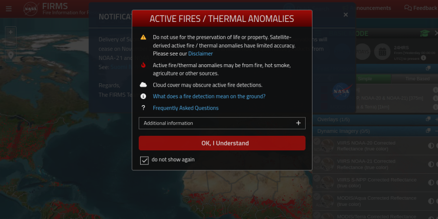
サイトを開く ↗
火災監視マップ
粟野翔 Kakeru Awano
https://firms.modaps.eosdis.nasa.gov/map/#d:24hrs;@123.3,28.5,3.8z
世界中の火災が起こっている場所を観測するための地図。研究者はこれをみて火災の発生傾向を分析することができる。
都市や国の検索機能があるのが良い点だと思った。また雲を重ねることができるため、天候と火災の関係も調べられるのも良い点だと思う。
USGSのマップのように分かりやすく時間経過で火災が起こった場所を確認出来たら良いと思う。
このマップは火災と関係のある火山がマッピングされていた。私の津波ハザードマップにも津波が起こった際に通行止めになりそうな地点をマッピングしたい。
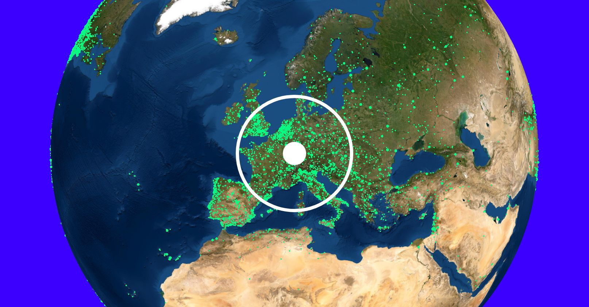
サイトを開く ↗
Radio Garden
JEON YUBEEN
URL:https://radio.garden/?hl=ja
目的：：世界各地のライブ放（ラジオ）を地理情報と紐付け、ユーザーが直感的に「音」で世界とつながる体験を提供すること。
良い点：放送局の密度が「緑の光の集まり」として可視化されており、どの地域に文化発信拠点が集中しているかが一目でわかる。
改善：地図は「場所」を示すものですが、ラジオは「時間」に依存します。
地図上に「夜のエリア（影）」をもっと明確に投影したり、時差をグラデーションで表現したりすることで、今まさに夜を迎えている街の雰囲気を視覚的に補完できるはずだ。
ヒント：「地図」という固定されたデータの上に「ラジオ」というリアルタイムデータを重ねることで、地図を単なる情報確認用ではなく「体験のプラットフォーム」として拡張する方法が印象的である。
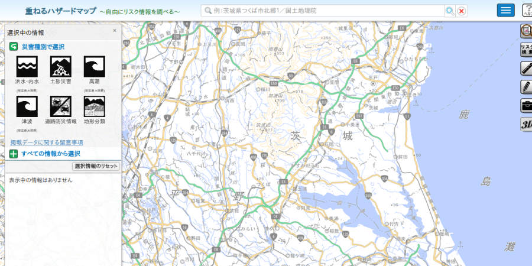
サイトを開く ↗
ハザードマップ
佐藤 陸 sato riku
URL:https://disaportal.gsi.go.jp/hazardmap/maps/index.html?ll=35.836185,140.126495&z=10&base=pale&vs=c1j0l0u0t0h0z0
・目的
日本の身のまわりの災害リスクを調べる
・良いと思った点
左にある災害ボタンを押すだけでその災害が起こるエリアを可視化できる。
デザインもわかりやすく例えば洪水ボタンを押すと洪水が起こるエリアを深さによって色を分けて表示してくれる。
・改善できそうな点
この地図は危険な場所はわかるが、実際その災害が起きた時の逃げ道などが表示されていないので、表示できるようにするとより良いと思った。
・ヒント
自分も災害に関するマップを作ろうと思うので、その時にどんな機能があるとよいかイメージが少しついた。
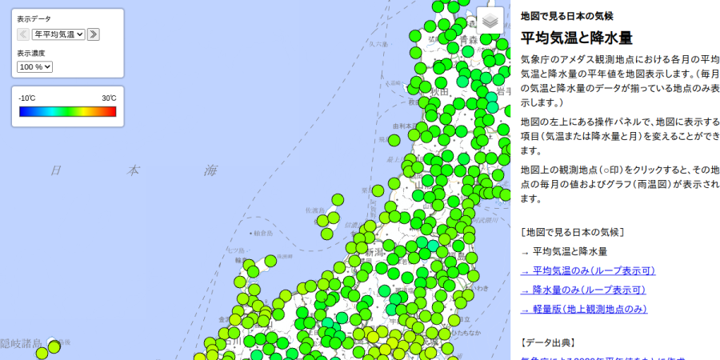
サイトを開く ↗
日本の気候の推移
石引響 Ishibiki Hibiki
URL：https://user.numazu-ct.ac.jp/~tsato/webmap/region/climate.html?data=climate&file=amedas
・目的
1年間の日本の気候の傾向を詳しく知ることができる。
・良い点
平均気温、降水量が全国規模で表記されているので分かりやすい。月毎に細かく指定でき、色付けもされているので、降水量と気温が把握しやすいです。
・改善点
この情報が2020年の日本の気候で固定されており、それ以前の以降を調べることはできない。また、表示データが全体的に大きく一部見にくいところもあること。
・ヒント
3Dにして立体的にし、気温や降水量に応じて高さが変化するようにすれば視覚的に更に比較がしやすくなるのではないかと思った。
・Objective
To provide a detailed understanding of Japan's annual climate trends.
・Strengths
The nationwide display of average temperature and precipitation data makes the information easy to digest. The ability to select specific months and the use of color-coding further simplify the process of tracking fluctuations in both rainfall and temperature.
・Areas for Improvement
The data is currently restricted to Japan’s 2020 climate, meaning users cannot look up figures for previous or subsequent years. Additionally, some UI elements are oversized, which can make certain parts of the data difficult to view clearly.
・Suggestions
I believe that incorporating a 3D visualization—where the height of the map or data points fluctuates according to temperature and precipitation levels—would make visual comparisons even more intuitive and effective.
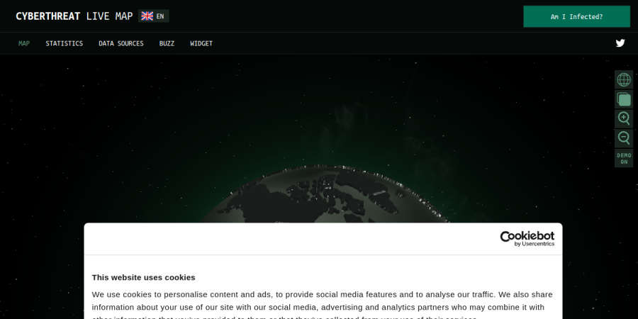
サイトを開く ↗
サイバー攻撃マップ
Souta Kakinoki 柿木奏太
リンク：
https://cybermap.kaspersky.com/
改善：ズーム、ズームアウトがしにくい
良い：とある企業がサイバー攻撃にあって犯人を探すとなってもどこからの攻撃なのかがわからないと操作が難航する可能性があるのでそこは良いポイント。
ヒント：セキュリティのことをやるのに古い情報だとあまり意味がないので、リアルタイムで更新をする地図を作りたい自分としてはそこはヒントになると思った。
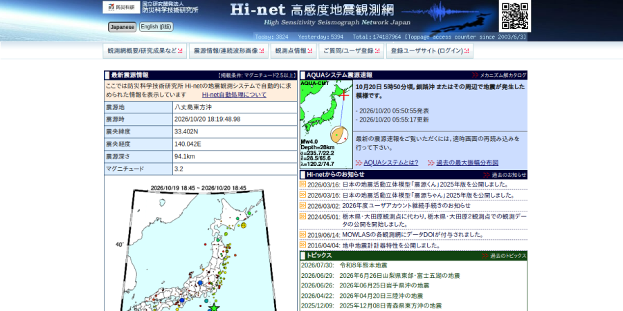
サイトを開く ↗
防災科研 Hi-net
Kotarou Nagano
このマップではここ数年で太平洋プレートの動きをまとまったマップで沈み具合がわかりやすくまとまっていたのでここからの大災害の対策が可視化できるものだと思い紹介しました。これのマップはポイントポイントの場所が見えないのが欠点だと感じました。
サイトを開く ↗
日本全国の医療の需要と供給
a250466r
サイトのトップページにリンク
観察コメント未提出 / No observation provided